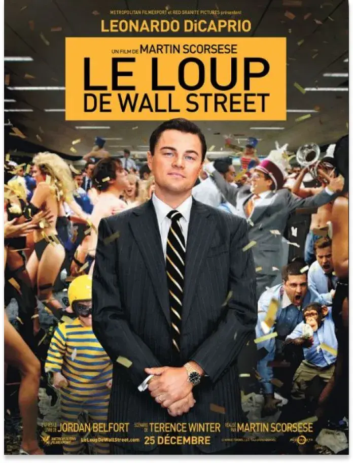

« Le Loup de Wall Street ». Tel est surnommé l’escroc Jordan Belfort dans les années 1990 à New York. C’est ce personnage qui est mis en scène dans le film fascinant de Martin Scorsese de 2013. Pour le courtier de Wall Street, gloire, argent, femmes et drogue deviennent une obsession. Avec le FBI à ses trousses, Jordan va tout faire pour ne pas se faire prendre…
décembre 2013.
RÉSUMÉ DU FILM

Les débuts du protagoniste
Dans les années 1980, Jordan Belfort travaille en tant que courtier dans l’entreprise Rothschild. Il suit le modèle de Mark Hanna, le patron de l’entreprise New yorkaise. Jordan obtient le 19 octobre 1987 sa licence de courtier. Mais l’entreprise fait faillite lors du krach boursier et Jordan est licencié.
Il se tourne alors vers une autre compagnie de courtage à Long Island. Jordan utilise son savoir et parvient à gagner de plus en plus d’argent. Il rencontre ensuite Donnie Azoff avec qui il va s’associer. Ils créent leur entreprise de courtage : Stratton Oakmon qui spécule selon une méthode illégale. Mais c’est le début du déclin pour Jordan, il plonge dans la drogue et les prostituées. Stratton Oakmon prend de plus en plus d’ampleur et compte des centaines d’employés.
Jordan tombe ensuite amoureux de Naomi Lapaglia, il quitte alors sa femme.
Une obsession : l'argent
Et surtout. N'oubliez pas que trop n'est
jamais assez !
Tel était le discours de Jordan pour motiver ses troupes.

La société Madden est introduite en bourse par Jordan et Donnie. Ils gagnent de cette manière des millions de dollars mais un problème se pose : la surveillance par un agent du FBI. Ils décident de cacher leur argent en Suisse. Cependant, le compte est au nom de la tante de Naomi, Emma, qui possède un passeport européen. 20 millions de dollars sont placés sur ce compte.
Max, le père de Jordan tente de convaincre Jordan de quitter son entreprise. Ainsi, il pourrait éviter la prison et profiter de sa famille. Mais sa soif d’argent n’est jamais assouvie. Au dernier moment Jordan décide de continuer à la tête de Stratton. Il vient d’être papa d’un second enfant, un garçon.
Jordan et Donnie.
La multiplication des ennuis
Quelques mois plus tard, alors que Jordan et Naomi sont en vacances en Italie, tante Emma décède. Jordan doit alors récupérer les 20 millions de dollars en Suisse. Mais en direction de Monaco, son bateau est pris dans une tempête et fait naufrage. Cela l’empêche d’arriver à temps à la banque.
Deux ans plus tard, Jordan est arrêté par le FBI. Il risque 20 ans de prison pour fraude. Il peut cependant atténuer sa peine s’il dénonce ses collègues. Voulant choisir cette dernière option, il l’annonce à sa femme Naomi. Mais elle lui fait savoir qu’elle veut divorcer et avoir la garde des enfants. Jordan s’énerve et prend de la drogue alors qu’il avait arrêté depuis plusieurs années. Il tente également de partir avec sa fille après avoir frappé sa femme, en vain.
Une annonce bouleversante
Nous retournons quelques jours auparavant, à Paris. Alice se rend chez un spécialiste qui lui apprend qu’elle est atteinte d’une forme précoce d’Alzheimer. Seymour, au courant pour sa maladie, cherche à l’aider rapidement. Il la convainc de se faire soigner au Segabo Cottage Hospital, centre de recherche de pointe.

La chute de Stratton
Jordan accepte le contrat du FBI et porte un micro. Il se rend d’abord vers Donnie et l’informe qu’il est sur écoute sur un papier. Mais ce papier est récupéré par le FBI, ce qui vaut à Jordan d’aller en prison sur-le-champ. La plupart de ses collègues sont arrêtés et Stratton ferme.
Jordan est condamné à 3 ans de prison. Une fois sa peine purgée, Jordan va transmettre ses techniques de vente lors de conférences.
française.
En quelques mots …
À travers ce film de 3 heures, Martin Scorsese nous présente un personnage plutôt particulier : Jordan Belfort. À la fois manipulateur, amoral, égoïste et mégalomane, le protagoniste suscite paradoxalement l'intérêt du spectateur. Tout comme dans Central Park de G.Musso, l’action se déroule à New York, plus particulièrement à Manhattan. C'est une occasion de s'immerger à nouveau dans cette ville multiculturelle.
D'AUTRES FILMS DE MARTIN SCORSESE :


York
Pour en savoir plus sur les meilleurs films de
Martin Scorsese, cliquez ici.
Ne manquez pas le mini-guide sur New York, qui
s'avèrera très pratique pour vous !
LIRE